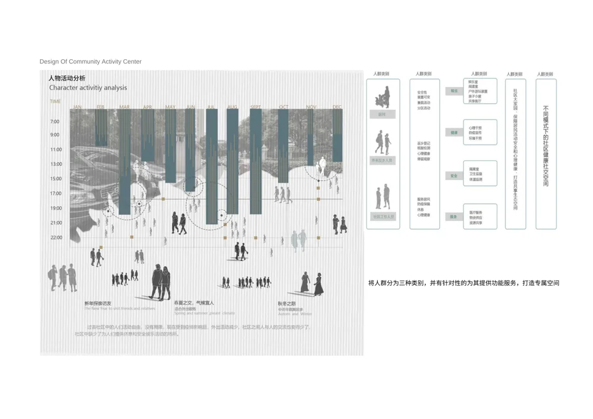
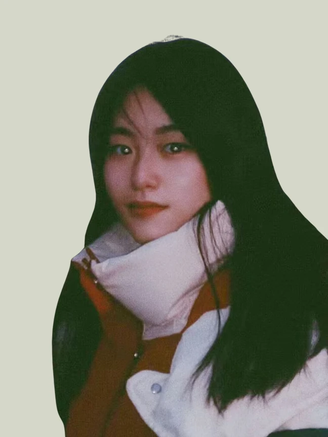

CHEN ZHIXIAN 陈智贤 · 设计作品集
A SELECTED PERSPECTIVESCROLL TO DISCOVER ↓


以空间，回应生活。
让设计，
连接更多可能。
01 / 03
+ THE APPROACH / 01
从人的日常出发，
让想法有处发生。
我是陈智贤，设计专业研究生。
关注人与环境之间的关系，在空间设计、
设计研究与 AI 辅助创作之间，持续探索。
+ SELECTED WORK / 02
作品选集(07)
从一个问题开始，
走向一种新的可能。
每一份探索，都指向对生活更细致的理解。END OF SELECTION — 07 PROJECTS
+ THE WAY OF WORKING / 03
让想法，
逐渐清晰。
从观察到表达，
在不断推演中接近更好的答案。

01 / OBSERVETHINK. EXPLORE. MAKE.
01观察日常
OBSERVE+
走近场地，也走近使用它的人。从区位、日常活动与人群需求出发，发现设计值得回应的问题。
在社区活动中心中探索 ↗02定义关系
DEFINE+
将观察转化为空间的组织逻辑。梳理功能、流线与共享程度，在真实需求之间找到连接的方式。
在农产品市场中探索 ↗03推演可能
EXPLORE+
用体块、草图、建模与 AI 视觉工具推演多种可能。在尺度、材料和体验之间，寻找更适合的表达。
在儿童友好空间中探索 ↗04让感受可见
EXPRESS+
从平剖立面到空间效果，从材质细节到光影氛围，将思考清晰地呈现出来，让设计能够被看见、被理解。
在木梁观岩茶器馆中探索 ↗+ BEHIND THE WORK / 04

CHEN ZHIXIAN / 陈智贤KEEP CURIOUS. KEEP MAKING.认真观察，
查看完整简历 PDF ↗
认真观察，
自由想象。
热爱设计，也热爱设计以外的世界。
我相信好的设计始于对人的理解。从社区生活、儿童友好空间到茶器馆，我尝试将观察转化为问题，再将问题转化为空间。也用绘画与 AI 工具延伸想象，探索更丰富的视觉表达。
2025 — 至今
河北工业大学设计 · 研究生
2020 — 2025
河北美术学院环境设计 · 本科
01 / RESEARCH
观察与研究
场地调研 · 人群需求 · 行为场景
从真实问题，建立设计的起点。
02 / SPACE
空间与体验
功能流线 · 体块推演 · 材质光影
让空间回应使用，也承载感受。
03 / EXPRESSION
视觉与新工具
手绘 · CAD / SU / 3ds Max / PS
AI 图像、视频与网页创作探索。
+ THE NEXT CHAPTER / 05
开放交流与合作下一个想法，
一起发生。
关于设计、研究，或一个尚未成形的灵感。
欢迎来聊聊。